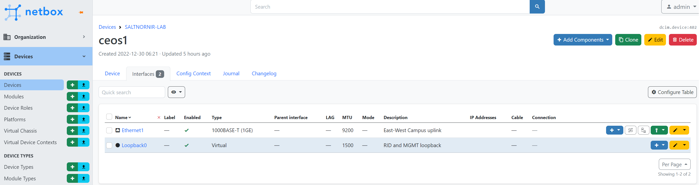

Templating Network Tests
5 Feb 2023 by Denis Mulyalin
Introduction#
Templating network devices configuration is a very common approach nowadays, network testing however, is rarely ( if at all) automated. Jinja2 comes to mind when somebody mentions network templates, YAML also pops up as a common way of expressing network related data.
SaltStack, Ansible, Nornir and others provide native support for workflows and payload templating using popular templating languages, this however rarely used to automate network tests.
The difficulty of doing network testing is due to the lack of structured data that can be easily extracted from network devices. As a result, one of common ways of dealing with network testing is to use show commands output to interpret devices state and operator using that output coupled with expert knowledge decides if device is in a desired state or needs remediation.
Luckily, if system created that can use plain text to encode tests content to carry on with testing, that system is very close to templating those steps using data driven approach.
Meet Nornir TestsProcessor#
In one of my previous blog posts I had a chance to write about the fact that network tests can be classified based on the scope as local (unit), adjacent (integration) and network (system) tests, the focus of this write up is mainly on local and adjacent types of scenarios. This is due to the fact that TestProcessor was created to deal with data produced by a single device only.
Original vision behind TestsProcessor was to take a piece of static YAML text:
- name: Software version test
task: show version
test: contains
pattern: "17.3.1"
err_msg: Software version is wrong
- name: Logging configuration check
task: "show run | inc logging"
test: contains
pattern: 10.0.0.1
err_msg: Logging configuration is wrong
collect output from network devices and give us tests results:
+----+--------+-----------------------------+----------+---------------------------+
| | host | name | result | exception |
+====+========+=============================+==========+===========================+
| 0 | R1 | Software version test | FAIL | Software version is wrong |
+----+--------+-----------------------------+----------+---------------------------+
| 1 | R1 | Logging configuration check | PASS | |
+----+--------+-----------------------------+----------+---------------------------+
Another networking industry common approach is to take data like:
HostName: switch1
Vlans:
- VlanId: 10
VlanName: MGMT
- VlanId: 20
VlanName: ACCESS
combine with Jinja2 template:
hostname {{ HostName }}
!
{% for Vlan in Vlans -%}
vlan {{ Vlan['VlanId'] }}
name {{ Vlan['VlanName'] }}
!
{% endfor -%}
and produce network device configuration:
hostname switch1
!
vlan 10
name MGMT
!
vlan 20
name ACCESS
Bringing two above approaches together leads to conclusion that it should be possible to make TestsProcessor tests suites dynamic - driven entirely by host's data. For example, if we have these two Nornir hosts:
hosts:
jundevice-1:
hostname: 10.0.0.1
platform: juniper_junos
groups: ["auth"]
data:
software_version: 18.1R3-S9
xrdevice-1:
hostname: 10.0.0.2
platform: cisco_xr
groups: ["auth"]
data:
software_version: 7.5.2
groups:
auth:
username: nornir
password: nornir
it is possible to write Jinja2 template like this:
- name: Software version test
task: show version
test: contains
pattern: {{ host.software_version }}
err_msg: Software version is wrong
producing host specific tests to run to validate device software version.
Above idea was implemented in Nornir-Salt starting with release 0.16.0
Scaling Up using Salt-Nornir#
Using Nornir to run tests for a handful (up to hundreds) of devices is great, but doing same for bigger number (thousands) of devices requires non trivial engineering.
Salt-Nornir helps to scale network management using Nornir based proxy minions, each handling multiple devices. Hence, network testing also can be scaled out using Salt-Nornir proxy minions.
For example, given the test suite on a master at /etc/salt/master/tests/testsuite-1.txt:
- task: "show version"
test: contains
pattern: "{{ host.software_version }}"
name: check ceos version
{% for interface in host.interfaces %}
- task: "show interface {{ interface.name }}"
test: contains_lines
pattern:
- {{ interface.admin_status }}
- {{ interface.line_status }}
- {{ interface.mtu }}
- {{ interface.description }}
name: check interface {{ interface.name }} status
{% endfor %}
coupled with this proxy minion pillar inventory:
hosts:
ceos1:
hostname: 10.0.1.4
platform: arista_eos
username: nornir
password: nornir
data:
software_version: cEOS
interfaces:
- name: Ethernet1
admin_status: is up
description: East-West Campus uplink
line_status: line protocol is up
mtu: IP MTU 9200
- name: Loopback0
admin_status: is up
description: RID and MGMT loopback
line_status: line protocol is up
mtu: IP MTU 1500
tests suite can be run using command:
[root@salt-master /]# salt nrp1 nr.test suite="salt://tests/testsuite-1.txt" table=brief
nrp1:
+----+--------+----------------------------------+----------+-------------+
| | host | name | result | exception |
+====+========+==================================+==========+=============+
| 0 | ceos1 | check ceos version | PASS | |
+----+--------+----------------------------------+----------+-------------+
| 1 | ceos1 | check interface Ethernet1 status | PASS | |
+----+--------+----------------------------------+----------+-------------+
| 2 | ceos1 | check interface Loopback1 status | PASS | |
+----+--------+----------------------------------+----------+-------------+
[root@salt-master /]#
Resulting in tests content being dynamically rendered according to data stored in host's inventory. Combine this with SaltStack reach data sourcing capabilities and We have a workable solution to test our networks.
Adding Netbox into the mix#
Netbox is a DCIM/IPAM software to model and document modern networks. Salt-Nornir comes with Netbox Pillar and Netbox Execution Modules, combined, they are capable of sourcing any data from Netbox over REST or GraphQL API right from your templates.
Netbox allows to model devices, here is an example of interfaces modeled in Netbox for ceos1 device:

Using Salt-Nornir execution module Netbox get_interfaces functions we can retrieve
device interfaces data from Netbox:
[root@salt-master /]# salt nrp1 nr.netbox get_interfaces device_name=ceos1 --out=yaml
nrp1:
Ethernet1:
bridge: null
bridge_interfaces: []
child_interfaces: []
custom_fields: {}
description: East-West Campus uplink
duplex: FULL
enabled: true
last_updated: '2022-12-30T11:21:59.922564+00:00'
mac_address: null
member_interfaces: []
mode: null
mtu: 9200
parent: null
speed: null
tagged_vlans: []
tags: []
untagged_vlan: null
vrf: null
wwn: null
Loopback0:
bridge: null
bridge_interfaces: []
child_interfaces: []
custom_fields: {}
description: RID and MGMT loopback
duplex: null
enabled: true
last_updated: '2022-12-30T11:22:32.225050+00:00'
mac_address: null
member_interfaces: []
mode: null
mtu: 1500
parent: null
speed: null
tagged_vlans: []
tags: []
untagged_vlan: null
vrf: null
wwn: null
SaltStack conveniently allows to call execution module functions from within the Jinja2 templates, enabling us to source any data directly during template rendering process. Lets use that in this template producing tests suite accordingly:
{% set interfaces = salt['nr.netbox']('get_interfaces', 'ceos1') %}
{% for interface_name, interface_data in interfaces.items() %}
- task: "show interface {{ interface_name }}"
test: contains_lines
pattern:
- {{ interface_data.mtu }}
- {{ interface_data.description }}
{% if interface_data.enabled == True %}
- "is up, line protocol is up"
{% elif interface_data.enabled == False %}
- "is down, admin down"
{% endif %}
name: check interface {{ interface_name }} status
{% endfor %}
Calling salt['nr.netbox']('get_interfaces', 'ceos1') inside of the template gives
us access to device interfaces data following with the for loop that renders individual
interface's tests. Running above tests suite produces these results:
[root@salt-master /]# salt nrp1 nr.test suite="salt://tests/test_suite_ceos1_netbox.j2" table=brief
nrp1:
+----+--------+----------------------------------+----------+-----------+
| | host | name | result | exception |
+====+========+==================================+==========+===========+
| 0 | ceos1 | check interface Loopback0 status | PASS | |
+----+--------+----------------------------------+----------+-----------+
| 1 | ceos1 | check interface Ethernet1 status | PASS | |
+----+--------+----------------------------------+----------+-----------+
There is also an option to do dry_run to produce tests suite content only without
running the actual tests:
[root@salt-master /]# salt nrp1 nr.test suite="salt://tests/test_suite_ceos1_netbox.j2" dry_run=True --out=yaml
nrp1:
ceos1:
- name: check interface Loopback0 status
pattern:
- 1500
- RID and MGMT loopback
- is up, line protocol is up
task: show interface Loopback0
test: contains_lines
- name: check interface Ethernet1 status
pattern:
- 9200
- East-West Campus uplink
- is up, line protocol is up
task: show interface Ethernet1
test: contains_lines
[root@salt-master /]#
Conclusion#
Running data driven tests on devices show commands output is not an easy task, Nornir TestsProcessor, SaltStack Salt-Nornir Proxy Minion and Netbox all combined or on its own, provide a great deal of flexibility and capabilities to successfully execute in that direction.
Thank you for reading to the end, all the best to you and your networks.